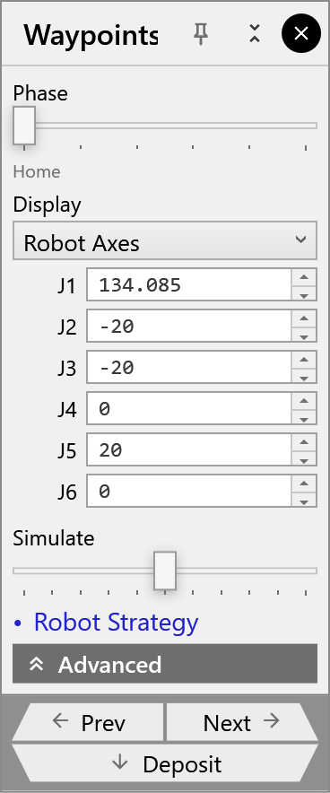

Waypoints
The Waypoints panel shows the waypoints of one phase and lets you change them, one at a time.
Opening it
There are several ways:
-
click a phase cell in the phase strip: the panel shows that phase;
-
press W (when you are not typing in a field);
-
click Edit (✎) in the tray under the phase strip, or ✎ in the second Waypoints panel;
-
click Waypoints in the Pickup, Centering, Deposit or Regrip panel.
From a phase cell, or from the Centering, Deposit or Regrip panel, it shows that phase. Otherwise it shows the phase the robot is in at the time.
It opens beside the phase’s station. It stays open until you close it with its ✕. Its title names the waypoint the robot is on, for example Waypoints • Centering · CenDropPos.

Moving through the phase
| Control | What it does |
|---|---|
Phase |
A slider that stops at each waypoint of the phase. The robot goes to the waypoint it stops at; its name shows below. |
Simulate |
A slider that rests in the middle. Drag left to move towards the previous waypoint, right towards the next, in steps of 20 %. |
Prev, Next |
The previous or next waypoint |
Deposit |
In the Deposit phase, jumps to DropPartPos; in any other phase, to the phase’s last waypoint |
The panel stays within the phase it shows: the sliders and Prev and Next stop at its first and last waypoint. To work on another phase, click its cell in the phase strip.
Reading a waypoint
Display chooses how the waypoint is shown:
| Display | Fields |
|---|---|
Robot Axes |
The six joint values J1 … J6 |
Grip Point |
The TCP’s position X, Y, Z and rotation W, P, R |
Wrist Point |
The same for the flange instead of the TCP |
All values are in the robot’s world frame.
Changing a waypoint
-
Type a new value in a field. The field turns amber.
-
Press Enter to apply it. Esc throws it away; Tab moves to the next field.
The arrows beside a field, and the mouse wheel over it, apply a step at once: 10 mm for X, Y and Z, 1° for angles and joints.
The robot moves to the changed pose, and the path is drawn around it:
-
yellow triangles at the previous, current and next waypoints;
-
yellow lines for straight moves;
-
white lines for joint moves.
What changes:
-
Only this waypoint. The rest of the cycle is not planned again.
-
Home is the first and the last waypoint; changing it changes both.
-
A pose the robot can’t reach leaves the joints as they were. The phase strip reports it as out of reach.
-
The phase strip checks the cycle again a moment later.
|
Note
|
Anything that plans the cycle again replaces your edits with newly planned waypoints. Make those changes first, and edit waypoints last. That includes:
|
Advanced
| Control | What it does |
|---|---|
Copy Axes |
Copies the current waypoint’s joint values |
Paste Axes |
Gives the current waypoint the copied joint values |
Reset All |
Puts every waypoint back as FRobot planned it |
Edited waypoints are saved in the solution file. Reset All still works after you open the solution again.
Configuration, Interpolate, Speed, Rounding, Insert, Remove and Robot Strategy are not available in this version: see Not available yet.